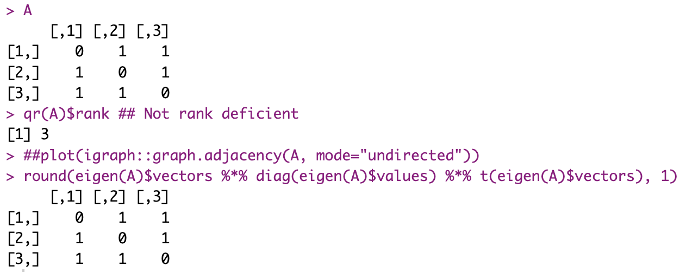

It’s been a while since I last produced anything for the blog. So I’ll start easy (or so I thought, initially).

Intro
As I was asked to talk about AI for Cybersecurity, I have been thinking about it for a few weeks, refreshing concepts, taking some notes, gathering some ideas, sources…
And one thing I keep coming back to is: how central matrices are to AI and Computational Engineering. They just are all over the place, the moment you start considering Artificial Neural Networks (and of course, that applies to DL…). Come to think of it, Word2Vec for words embedding learning is a NeuralNet. (I’m only mentioning this because Word Embeddings are important for LLM, and it seems everyone only wants to hear about LLMs lately… Not that I agree.)
And then you would know Matrices calculations are important nowadays if it were only for the recent NVidia stock price evolution. GPUs are great at one thing: Multiplying matrices.
So yeah, I’ve been thinking about the importance of matrices…
For today: Simple (& non-AI) application to work with a (very) particular type of matrices
As you know, I’m an enthusiast of Graph Theory.
Long story short, one option to represent simple graphs is the “Adjacency Matrix”, whereby one sets a number (usually 1) in position a_ij of the matrix, representing there is an edge between points i and j. This is a square matrix. For an undirected graph, convention (and related calculations) expect that matrix to be symmetrical.
\[ a_{ij} = a_{ji} \]
Well, this is cool, but then the square matrix has a lot of repeated info, doesn’t it? And that’s inefficient for, say, storage purposes. Maybe.
(Lists of nodes + adjacency lists, say as those used in the Pajek Net file formats, are better suited than adjacency matrices, particularly for sparse ones, if storage is actually an issue… But that’s a different topic).
Wouldn’t it be cool to be able to “compress” the symmetric matrix?
Context for today
I was reading random pages of a book on Numerical Methods, looking for inspiration for a Blog entry. I ended up on an explanation of the Cholesky Matrix Decomposition.
Long story short, at first I only read the first paragraph, which focused on symmetric matrices (like, as noted, those of a simple undirected graph!). You could see how I got enthused upfront…
Then I kept reading, through the math, until I found a problem… The matrix needs to be “definite positive”?!
What really ended-up happening
I unwittingly reviewed a bit of spectral theory 😀
So OK, for a matrix to be definite positive, it needs to fullfil:
\[ X^T[A]X > 0, \forall{X}\neq0,X\in\mathbb{R} \]
Which is to say, for any vector X of real numbers different from vector {0}, the definite positive square matrix A satisfies the above.
Now on to why it won’t work for an Adjacency matrix of a simple connected graph:
First, with no loops, well, diagonal elements of our matrix will be 0. Which means, the trace (tr(A)) will be… zero. Which is not a good sign.
Indeed, we know that to be definite positive, an equivalent here is that our eigenvalues need to all be (strictly) positive. The trace being the sum of said eigenvalues… If it is zero indeed, then that’s already confirming that we cannot apply the chosen algorithm 🙁
And if there were loop? Well, then we’d still need to verify for *strictly* positive eigenvalues, as the matrix could still be rank deficient (and so have one or more eigenvalue = 0).

Side note (completely side-tracking things by now… Just because I was on the topic of matrix decomposition), this is cool: For symmetric matrices, you can simply use the eigenvectors and eigenvalues to reconstruct the matrix.

Moving on.
Back to Cholesky
Right, so I can’t apply this algorithm to simple undirected graphs’ Adjacency Matrices. Pity. That’s not to say it’s completely useless, though.
I’ll go ahead and implement from pseudo-code into R the algorithm (which is, incidentally, already in base R with the function chol(), of course, mind you).
I also use the example provided.
A <- matrix(c(6, 15, 55, 15, 55, 225, 55, 225, 979), nrow=3)
my_chol <- function(mat_A) {
## I should check for definite positive properties here...
mat_L <- matrix(rep(0, length(mat_A)), nrow=nrow(mat_A))
for(k in 1:nrow(mat_A)) {
t_sum <- 0
if(k > 1) {
for(i in 1:(k-1)) {
t_sum <- 0
if(i > 1) {
for(j in 1:(i-1)) {
t_sum <- t_sum + mat_L[i,j]*mat_L[k, j]
}
}
mat_L[k, i] <- (mat_A[k, i] - t_sum) / mat_L[i, i]
}
t_sum <- 0
for(j in 1:(k-1)) {
t_sum <- t_sum + mat_L[k, j]^2
}
}
mat_L[k , k] <- sqrt(mat_A[k , k] - t_sum)
}
mat_L
}
all.equal(my_chol(A)%*%t(my_chol(A)), A)And this is it. Not very impressive with a small matrix, but for a large (positive definite symmetric) matrix, this could potentially save some resources.
Conclusion
This was a weird entry. I know. I thought it would come out different, but it didn’t.
Also, it’s mostly useless for the topic of AI, as it is, I am well aware. But that wasn’t really a goal anyway. For one brief moment, I thought there’d be a cool way, the Cholesky Decomposition, to compress info of adjacency matrices, which… Most often, doesn’t apply.
Well. I learnt something, I guess.
References
Chapter 11 of “Numerical Methods for Engineers”, S. Chapra, R. Canale (Ed. Mc Graw Hill Education) (No link is affiliated)